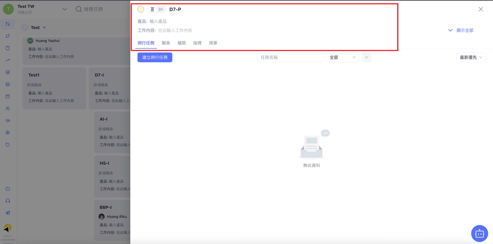

BBP 操作教學手冊
Business Booster Platform — 企業全方位數位轉型解決方案
第一部分：平台概觀與核心價值
■ BBP 定義與理念
BBP 是企業數位化營運的「數位大腦」，幫我們把「組織架構」與「每日工作」串聯起來，讓管理進度一眼看穿。
- 工作不瞎忙： 讓系統幫你管雜事，把精力留給真正有產值的工作。
- 經驗不流失： 做事方法（SOP）都留在系統裡，新人一秒上手。
■ 登入準備與環境建議
登入網址：https://my.bbooster.io/login
- 帳號資訊： 請使用執行顧問為您開通的電子郵件進行登入。
- 忘記密碼： 若忘記密碼在登入頁面下方可以點選重新設定。

■ 介面語言設定
BBP 預設會自動切換。若需手動調整：點擊右上角 [⚙️ 設定] ➔ 選擇 [Language / 語言] ➔ 選擇 [繁體中文]。

■ 核心運作邏輯
平台循環：組織圖 (基礎) ➔ 任務 (執行) ➔ 知識庫 (經驗) ➔ 儀表板 (數據)。

■ 介面快速導覽

A.左側選單

B.頂部列

C.主區域
第二部分：核心模組詳解
2.1 組織圖 — 企業的骨架
BBP 組織圖是企業管理系統的核心基礎。具備數據看績效、定義具體成果 (VFP) 與 SOP 列出標準步驟等特點。

■ 新增組織圖
當企業需要針對不同事業體或新的組織架構進行規劃時，可透過此流程建立新版本的組織圖：
- 開啟建立功能：點擊頁面左上角【下拉選單】 ➔ 選擇【+ 建立組織圖】。
- 輸入基本資訊：設定該組織圖的【名稱】與【說明】，點擊【建立】。
- 選擇建立模式：
- 從頭開始建立：適合全新的組織規劃。
- 經典版：套用系統預設的標準架構模板。
- 即時切換：建立完成後，可透過左上角【下拉選單】在不同版本的組織圖間快速切換。

■ 調整組織圖與進階設定
BBP 採用「即時自動儲存」機制，操作者可以在編輯模式下直覺地調整企業架構，不需額外按儲存：
- 進入編輯模式：點擊右上角【自訂視圖】 ➔ 開啟【編輯模式】開關。
- 增減職務節點：
- 新增：點擊職務格子下方或右側的【+】號，即可長出「下層」或「同層」職務。
- 刪除：點擊格子右上角【⚙】圖示 ➔ 選擇【刪除此職務】（僅支援從最下層職務開始刪除）。
- 修改職務資訊：在編輯模式下，直接點擊職務格即可修改【職務名稱】、【產品】或【工作內容】。
- 進階設定：點擊任一職務格子右上角【⚙】，可在彈出視窗中設定：
- 職員管理：指派該職務的負責人。
- 權限設定：定義該職務在系統內的權限範圍。
- 例行任務：此職位必須定期執行的任務。
- 指標數據：設定該職務需追蹤的指標。


2.2 任務 — 執行動力
包含任務建立、行事曆同步與週計畫審核。主管可隨時監督下屬進度並給予協助。

■ 任務建立與多模式檢視
以下畫面示範如何建立任務、切換三種模式以及查看管理視角：


■ 週計畫審核機制
週計畫的切換、對應指標、提交與主管審核畫面：


■ Google行事曆連動
Google 行事曆連動設定與同步後的畫面示意：

2.3 知識庫 — 企業資產
資料不難找，文件統一管理一搜就有。支持將文件指派給特定職務進行學習確認。

■ 規章建立與發布
規章建立三部曲與知識庫資料夾 / 新增文件畫面：


■ 指派學習與確認
指定學習彈窗與學習狀態名單（已學習 / 待學習）：


2.4 儀表板 — 數據真相
執行數據自動變圖表。打造專屬畫面，把最重要資訊放在最前面。

■ 指標建立與設定
指標建立兩種路徑與指標詳細設定視窗畫面：


■ 儀表板分享
儀表板佈局建立介面與分享 / 權限設定示意：


第三部分：管理與技術維護
■ 帳號安全與個人化設定
建議每位使用者定期檢查帳號狀態。於「個人設定」修改頭像與密碼，保障企業數據安全。
■ 常見疑難排解
- 權限問題： 請確認「組織圖」中的職務指派是否正確。
- 同步延遲： 嘗試重新整理網頁。
■ 支援管道與資源
若遇到系統錯誤（Bug）或帳號問題，請直接聯繫您的執行顧問或查閱知識庫教學文件。